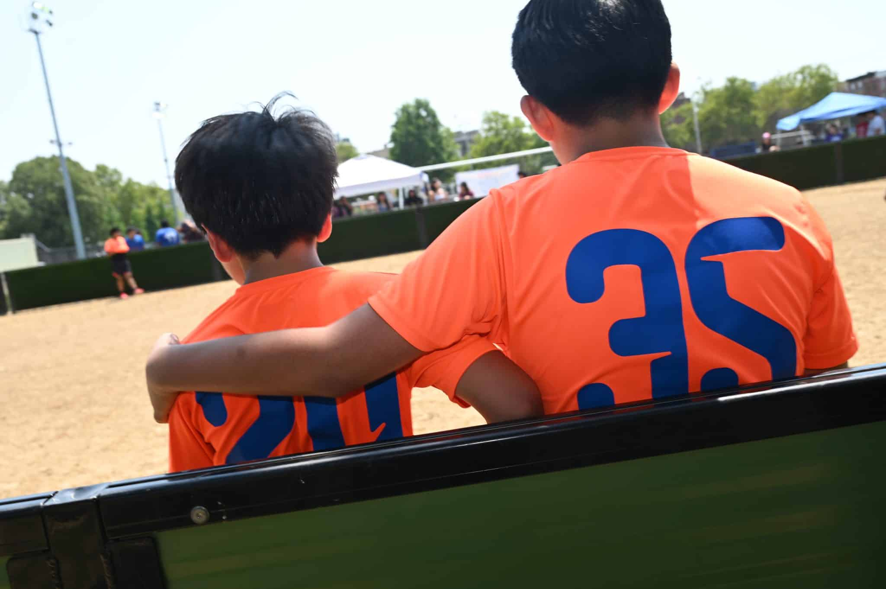
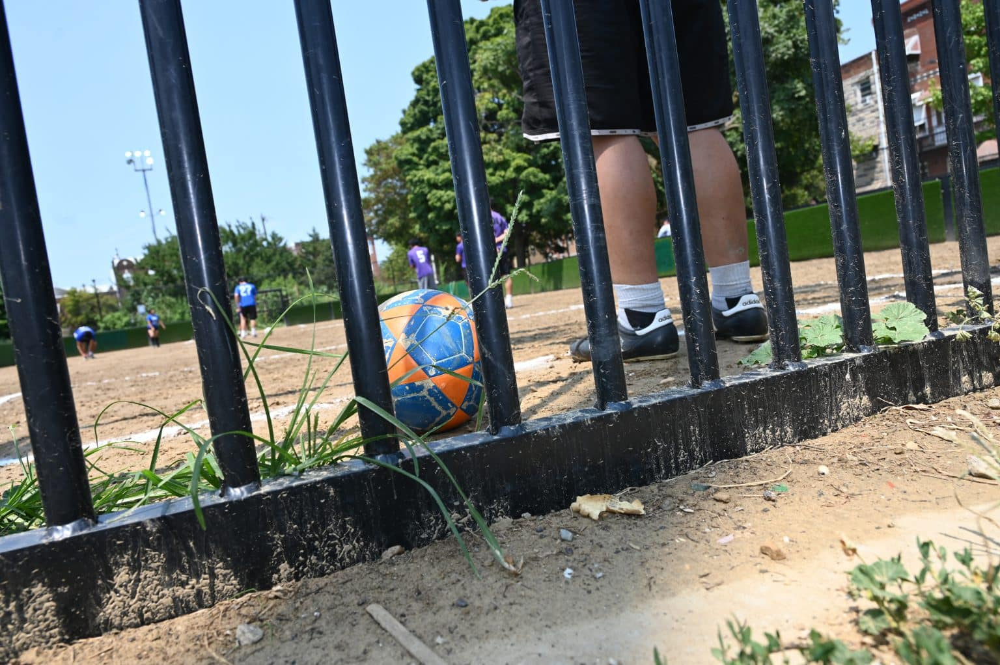

|
|
|
|
|
Over the course of the 2026 World Cup, hosted by 16 North American cities, national networks delivered electrifying coverage. High-definition drone cameras swept over packed 70,000-seat stadiums, veteran analysts dissected tactical formations, and post-match press conferences were beamed to billions of viewers worldwide. The world’s biggest tournament got the media spectacle it deserved.
Alongside that, this summer’s greatest attraction provided the fuel for storytelling and reporting of a different type. Diaspora press chronicled what it felt like to host the tournament in one of the most diverse nations on earth, capturing the energy on stoops and rec department fields, and inside restaurants, immigrant-owned small businesses, and living rooms.
|
|
 Players at Capitolo Playground during the Grand Final – by Stephen Knight
|
Playgrounds, Fields, and Festivals
In host city Philadelphia, 2Puntos Platform, a bilingual, hyperlocal, multimedia outlet serving the city's Latine community, turned its lens toward South Philly’s Capitolo Playground to cover the Grand Final of "Los Lobos" (The Wolves)—a youth soccer league founded by Mexican immigrant Luis Uribe that has grown from 15 neighborhood kids in 2009 to a 180-player community pillar.
2Puntos reported on how second-generation youth and newly arrived immigrants used the tournament to celebrate dual identity and to elevate the role that fútbol (soccer) plays in everyday life among immigrant communities across the nation. Reporter Valeria Uribe introduced readers to 11-year-old Camila, who is half Colombian and half Dutch, wearing her Colombia tricolor jersey alongside her sister to cheer for her homeland. Parents like May Gaitan highlighted how the league creates a deep sense of belonging for their children, providing a safe neighborhood environment where families look out for one another and build a supportive community hub right on the field.
"Valeria’s reporting—and our work as a hyperlocal media outlet—shows why it is vital for Latine press to document moments of collective joy during a massive event like the World Cup,” says Emma Restrepo, the founder of 2Puntos Platform. “These stories remind us that global spectacles are felt most intimately at the neighborhood level. By centering these local experiences, we do more than cover sports; we honor the emotional and cultural worlds that shape our youth. For our communities, joy is not a distraction from the global event—it is the heartbeat that connects us to it." She noted that this was especially meaningful for leagues like Los Lobos, which has been operating for more than 20 years.
Also in Philadelphia, FunTimes Magazine, founded in 1992 in Liberia and operating in Philadelphia for over a decade to serve an African diaspora audience, took a deeply reported approach to demonstrate how the global tournament hit home for the African and Caribbean diaspora. They mapped how stadium kickoffs intersected directly with the city’s historic cultural calendar. On June 14, as South Philly held the 51st annual Odunde Festival, filling the streets with West African heritage, batá drums, and sacred processions, the celebration flowed directly into Lincoln Financial Field for Côte d'Ivoire’s evening match against Ecuador. Less than a week later on Juneteenth, FunTimes highlighted the historical
layering of Haiti, the world’s first free Black republic, taking the pitch against Brazil on the exact day commemorating emancipation, inside the city where the Declaration of Independence was signed.
FunTimes also expanded its lens, analyzing how African talent shaped many of the World Cup teams beyond the continent. By tracing diaspora pathways and migration, their analysis showed how players of African descent, from U.S. stars Timothy Weah and Folarin Balogun to European standouts like Jérémy Doku and Manuel Akanji, are defining the competitive outcome for nations worldwide.
FunTimes wasn’t the only outlet to highlight the centrality of the continent to this year’s World Cup. TANTV News, a Washington, D.C. area-headquartered outlet powered by a coalition of journalists reporting for African and multicultural Black diaspora communities nationwide, charted the road to 2026, tracking every twist of the campaign—from qualifiers the Super Eagles of Nigeria battling through group-stage turbulence to powerhouses like Egypt, Cameroon, and Morocco asserting dominance. By framing soccer not just as a sport but as a shared cultural touchstone, TANTV kept diaspora communities across North America connected to their home nations' historic march toward the global stage.
When Haiti returned to the World Cup pitch for the first time in 52 years, the moment resonated across a diaspora whose own journeys mirrored the squad itself, most of whom were born outside the country. But while major networks broadcast the match, in-language coverage in Creole and French was absent. Caribbean Television Network (CTN) met that gap by securing emergency grant support to deliver dedicated, in-language live coverage. "Mainstream corporate broadcasts carried the game, but they did not tell it in our language, from our perspective, for our people," says Emmanuel Paul, Executive Director of CTN. "With virtually no funding, our team made sure the diaspora didn’t experience it through someone else’s cameras, but in Creole and
French, in our own voice." CTN’s effort demonstrates how targeted micro-grants can help independent outlets claim space during major global events.
|
|
 Children playing at Capitolo Playground – by Stephen Knight
|
Mapping to Enhance Experience
This year’s World Cup also became an opportunity for diaspora press in host cities to highlight neighborhood spots that connected to the teams on the pitch. Reporters linked game days directly to immigrant-owned restaurants, free public parks, and safe community spaces where residents could gather.
In New York, Documented, an independent, non-profit newsroom dedicated to community-driven reporting with and for the city's immigrant communities across four languages, aimed to drive business to immigrant-run dining across eight competing World Cup nations through a guide. Rather than pointing readers to franchise sports bars, the reporting mapped neighborhood staples where centuries-old recipes feed diaspora communities every day. The guide highlighted staples like Harlem’s Chez Maty et Sokhna serving Senegalese thieboudienne, Flatbush’s Djon Djon gathering crowds over symbolic Haitian soup joumou, and Jackson Heights’ Arepa Lady, a generational Colombian institution built from a single street cart.
On the West Coast, L.A. TACO, an award-winning, independent media platform celebrating 20 years of street-level journalism across Los Angeles, made sure their audience had ample free or low-cost ways to enjoy the games, as an alternative to the historically exorbitant tournament ticket prices at this year’s Cup. The publication built a street-level directory of 78 venues across L.A. County where fans could gather to celebrate together, including 3v3 pickup games in Boyle Heights, a massive watch party hosted by 16 Korean and Korean-American organizations in Liberty Park, and Mercado Mundial in West Adams, where MidCity Mercado hosted bilingual game screenings alongside local small business vendors. This, in addition to
19 free rec center or plaza screenings.
In Chicago, Borderless Magazine, an award-winning English and Spanish-language nonprofit newsroom for the city's immigrant communities, deployed its visuals team, led by Max Herman and CatchLight fellow Camilla Forte, to document how local venues across immigrant neighborhoods transformed into gathering spaces. At Kizin Creole in West Ridge, owner Daniel Desir welcomed crowds gathered to watch Haiti’s return to the World Cup after a 52-year absence, turning a dimly lit neighborhood restaurant into a sea of red and blue. In Pilsen, Borderless captured the
electric atmosphere at Monochrome Brewing, where fans in luchador masks erupted in cumbia and celebratory tequila shots after Mexico defeated South Korea.
Borderless also chose not to turn away from the hard stories this Cup raised. When U.S. Customs and Border Protection questioned an Iraqi national team player for seven hours at O'Hare Airport, reporter Tara Mobasher covered local organizers, including the Illinois Coalition for Immigrant and Refugee Rights and the Arab American Action Network, launching the "No ICE in the Cup" campaign. By covering stories of demands that stadiums, fan zones, and neighborhood watch parties remain free from enforcement intimidation, Borderless found an effective balance in covering the beauty and pain that sat side by side in many immigrant neighborhoods this summer.
World Cup 2026 may be in the rearview mirror. But a look-back at this summer’s coverage offers a reminder of the power of diaspora press to serve information needs of all types, including – and sometimes most importantly – those of joy, cultural cohesion, and shared identity.
|
Share With Us
Thank you for the essential work you do every day to keep our communities informed and resilient. As we move our 2026-2028 Strategic Plan into action, CCM is committed to generating the shared knowledge, elevating the excellence, and unlocking the transformative opportunities our sector deserves. We are honored to be in this work with you as we continue to build collective power across the field.
Our sector thrives when we learn from one another. Please share your community media news, innovations, job postings, resources, or reporting with LaMonte Guillory, Director of Communications Strategy, at lamonte.guillory@journalism.cuny.edu so we can continue to shine a wider and brighter spotlight on excellence in community and ethnic media on journalism's main stages.
|
|
|
|